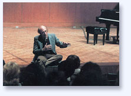
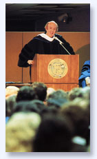

|
"I have heard hundreds of
speakers in my time, and Lorin ranks among the most
inspiring, visionary presenters I have ever heard."
- Larry Dossey, MD,
author of Healing
Words |
|
Lorin Hollander brings 50 years as a world-renowned classical
pianist and parallel career as a visionary speaker to corporate
audiences, university communities and spiritual consciousness
gatherings across the US and internationally for presentations
which awaken creative vision and illuminate what the human
challenge of our time truly is. Hollander was an infant child
prodigy who made his Carnegie Hall debut at the age of eleven
and has performed with virtually every major symphony orchestra
in the world.
As
a veteran speaker for over a generation, Lorin Hollander has
an innate ability to penetrate diverse fields of knowledge
and to articulate the underlying dynamics of creativity to
be harnessed at the heart of each. Mr. Hollander has devoted
a lifetime to integrating two gifts, presenting multi-disciplined
lectures interwoven with performances of deeply inspiring
classical music. The profound transformational effect this
has on people is born of the organic flow of a lecture imbued
with insight, inspiration and vision while interwoven with
the heartfelt expression and spiritual beauty of great music.
|
Presenting and performing
at conferences, workshops, and special events, Lorin
Hollander speaks on:
|
 |
- New paradigms of leadership
- Stage fright / life fright
- New orders of creativity
- Visionary education
- Global futurism
|
- The evolution of human consciousness
- Survival of consciousness beyond death
- Spiritual and integral healing
- Empowering seniors as elders
|
Lorin Hollander works closely with corporate leaders on the
new paradigms of leadership and transformation in the institution.
He guides the audience to discover how a commitment to creative
collaboration rather than competition empowers synergy and
genuine innovation.
"What people
carry away from Hollander’s inspiration continues
to resonate long after the initial striking of the
bell.”
– Michael Cerveris,
former Dean, Alverno College |
|
Lorin Hollander’s speeches are truly more than lectures,
they are opportunities for personal transformation. Whatever
the institutional interest of the audiences Lorin Hollander
speaks to people in ways which awaken abilities not yet taught,
not yet named let alone accomplished. Through an entirely
different order of communication, and with the performance
of music at the piano, Hollander takes us beyond the cognitive
and the experiential into the realm of collective wisdom and
prophetic creative imagination. Hollander has the ability
to bond with a gathering of people in such a way that each
has available to them a new possibility for achieving and
accomplishing what was previously impossible in their lives
and work. Lorin Hollander catalyzes the visionary in every
person, he has us touch it, feel it, and learn how it can
be unleashed as a labor of love – love for humanity,
love for the earth, and love for life.
Music and Planetary Survival
Re-imagining our institutions,
empowering creative community
We are living at a crucial and very dangerous time, unprecedented
in human history. Investigating the burning question of how
we might ground human existence in creative harmony with the
rhythms of life.
Music, Sunflowers, the Cosmos
and Me
Nature, Vibration, the Music of
the Spheres
The universe is shaped the way it would sound. As the
blueprints for ecological revival and planetary transformation
– the vibratory patterns underlying the causative principles
of the shapes we find in nature are illuminated through an
exploration of music.
Toward the Light – Mystery,
Adventure and the Experience of Dying
“If you die before
you die you will not die when you die.”
There is little in human existence more relevant to
our lives than the inevitable experience of death and dying.
Knowing the very real possibility that our dying can be an
awesome adventure and time for liberation can utterly transform
the way we live our lives.
We Have Met the Enemy and It
is Us
Breaking through our fear
of failure, unleashing creative innovation
From concerns about winning the approval of our supervisors
and bosses to distinguishing the true nature of what we believe
is a critical “other,” this presentation provides
access to a breakthrough in creative self-expression.
The Symphony Conductor –
New Paradigms for Leadership
As a metaphor for a new model for leadership, the symphony
conductor holds the vision, empowers authentic ownership and
full self-expression, awakening creative contribution for
the good of all.
Music, Creativity and Myth –
Genius and Madness
The Hero’s Journey
of Mussorgsky’s “Pictures at an Exhibition”
The great creators left evidence, personal chronicles
of their mythological journeys expressed in their works of
art. This presentation is an initiation into the spiritual
heights and emotional depths of a Hero or Heroine’s
Journey through music.
Rites of Passage – Initiation,
Wholeness and Creative Leadership
Transforming spiritual
bankruptcy in our communities
Young people desperately need rites of passage in their
lives, experiences guided by elders wherein our youth undergo
what will allow them to reclaim not-yet-recognized aspects
of themselves and take leadership in the community.
For
inquiries and booking information, please contact:
Tara
Hollander
207.567.3219 |
|
From Senior to Elder –
Singing the Music of the Spheres
Embarking at last on the
creative journey of our lives
At a time when many yearn for inspiring new creative
endeavors, our ever-growing population of seniors seek a rite-of-passage,
enabling them to take their rightful place in wisdom as true
elders.
|